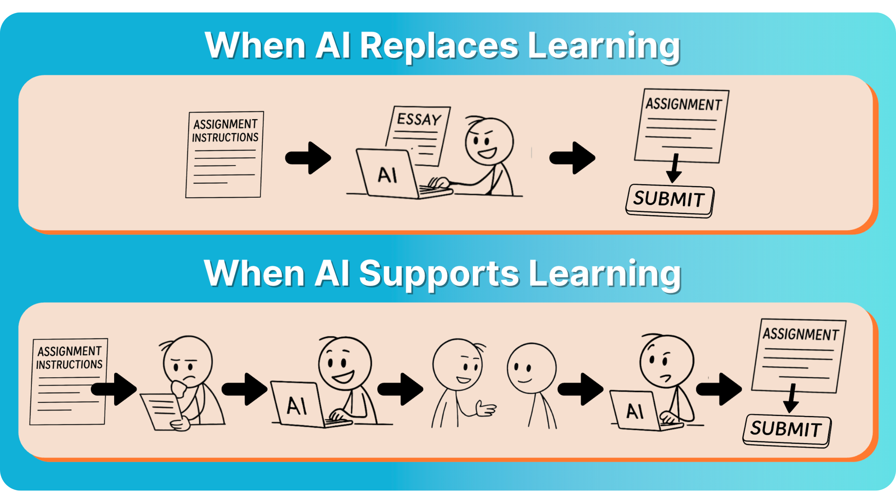
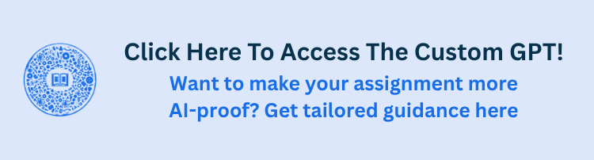

AI-Proofing Assignments#
This section takes a practical approach to assessment design in the AI age. First, we explore where the boundary lies between productive AI use and academic misconduct. By clearly defining this line, educators can proactively design “AI-resilient” assignmts that are both difficult for AI to complete independently and genuinely engaging for students to do.
At which point does AI use become misconduct#
Determining when AI use crosses into academic misconduct is complex, and the exact line will always depend on the teacher, the learning objectives, and the expectations set for a given task. However, a clear principle can guide this decision:
AI becomes misconduct when students use its outputs uncritically, thus incorporating text, ideas, or solutions without engaging in the intellectual steps that the assignment is designed to develop.
For example, if a student simply pastes an AI-generated answer into an assignment without questioning its accuracy, reflecting on its reasoning, or adapting it to their own understanding, they are no longer learning.
{kind=link}

Because AI is evolving rapidly, the definition of fair use and misconduct will need ongoing refinement. Regularly gathering feedback from both students and educators can help ensure interactive updates to assignment design, expectations, and documentation practices, ensuring AI continues to be embraced as a tool and not replacement to learning.
How should grading and assignments adapt#
Preventing AI from replacing learning requires designing assignments and systems that emphasize critical thinking, personal input, and process over polished final outputs. Trying to react after problems appear, such as by using AI detectors, is not a reliable option. These tools can flag genuine work as AI-generated, miss AI-written text that’s been lightly edited, and can show bias against certain student groups.
Instead, the focus should be on building assignments from the ground up that are both difficult for AI to recreate and genuinely engaging for students to complete. By making the assignment focused on involving authentic effort, the barrier to misusing AI becomes much higher, and it becomes less tempting to rely on AI for shortcuts.
Changing assignments to be more AI resilient#
Assignments that draw on local contexts, personal experiences, or course-specific discussions are harder to outsource to AI. For example, asking students to analyze a company in their own region or to reflect on insights from an in-class debate requires unique input that AI cannot easily generate. These tasks ensure that students apply concepts in ways that are personally meaningful and contextually grounded.
Breaking tasks into stages (brainstorming, drafts, peer feedback, etc.) ensures students engage with the material over time rather than producing a final product all at once. Scaffolding with in-person checkpoints or discussions makes it clear whether students are developing their own thinking or relying entirely on AI.
Assignments that use varied formats reduce the likelihood of over-reliance on AI generation. Unique formats tend to require more creativity, synthesis, and personal interpretation. Examples of varying formats include:
Creative Multimedia Projects
Oral Exams and Presentations
Real-Time Proctored Exams
Group Projects
Reflective Assessments and Portfolios
Essays and Written Assignments
Short in-class assessments, group discussions, and oral presentations help instructors gauge students’ understanding in real time. These components can reveal red flags when students seem unable to explain or expand on work they have submitted.
Placing greater weight on evidence of progress, drafts, and reflection discourages students from submitting polished AI-generated work. By rewarding the development of ideas over time, instructors shift the incentive away from shortcutting the process.
Lastly, while academic work will always require rigor, assignments that feel genuinely engaging and purposeful can intrinsically motivate students to invest their own effort. This, in turn, makes using AI to bypass the learning process less appealing. To address this, assignments can incorporate a few straightforward strategies:
Provide relevant real-world cases and challenges
Allow for student choice
Incorporate collaborative and interactive elements
Increasing transparency and documentation in assignments#
Improving reflection increases transparency and encourages metacognition whereby students think explicitly about their learning process and AI’s role in it. By regularly examining how and why they use AI, students develop critical evaluation skills and learn to identify AI’s strengths and weaknesses. This reflection can be done in many ways such as:
1. Reflection questions at the end of assignments
Teachers can ask students reflection questions such as: What was the most helpful AI suggestion and why? Did you notice any bias or errors from the AI? How did you spot these, and what did you do about them? Next time you use AI in an assignment, what will you do differently and why?
One problem is that students currently tend to answer these questions quite superficially. This is partially because students forget all the ways they used AI throughout the assignment. One way to address this is to have students create micro-reflections throughout the assignment. This allows them to keep a record of all the ways they used AI. For example the statement can be added each time the student uses AI:
[AI Tool] was used to [goal]. It suggested [output]. These suggestions were [kept/changed] because [reason].
Then at the end of the assignment students can review these micro-reflections and think more critically about their AI use. Furthermore, teachers can analyse all the micro-reflections of their students and gain insights about how students are using AI, allowing them to iterate and improve the assignments.
2. Chatbot-guided reflection
Students can reflect by talking with a chatbot that asks questions, follows up on their answers, and pushes them to think deeper. Following this, a conversation summary or full transcript can be shared with teachers.
Tools like Grammarly Authorship automatically track and label text as human-written, AI-generated, or AI-edited, providing students with a transparent record of their writing activity. By asking students to submit authorship reports alongside their work, teachers can see the origin of text and verify that students were actively engaged in writing rather than simply submitting AI output. However, its important to note that tracking tools (like Grammarly Authorship) are not without flaws. For example, students could generate AI content elsewhere and rewrite it in their own words inside the monitored workspace, bypassing critical engagement.
Therefore, better documentation and monitoring shouldn’t become the sole strategy for responding to GenAI. Instead teachers should embrace the opportunity towards changing assessments to better develop student skills actually needed in this new AI age.
